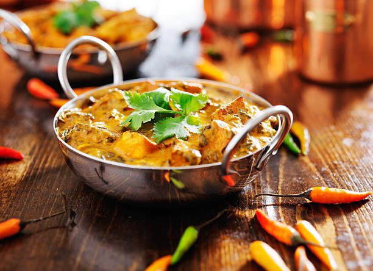

Indian curry

Indian curry first dates back to 1498, when the Portuguese arrives to India for rare spices like cardamom, cloves,and black pepper. These spices at the time only grew in India. The Portuguese were forced to make a word for a spicy stew so they went with 'carel'. By then the word 'curry' was already assimilated into the cultures of Fiji, Japan, and singapore.

After a long time a company in India overthrew the Portuguese and seized control of India. But since the British believed they made everything "better" they changed the word 'carel' to 'curry' which is a term that is used to described thick stews that are made with the most basic ingredients. these ingredients included tomatoes and spices that are served alongside rice or bread.